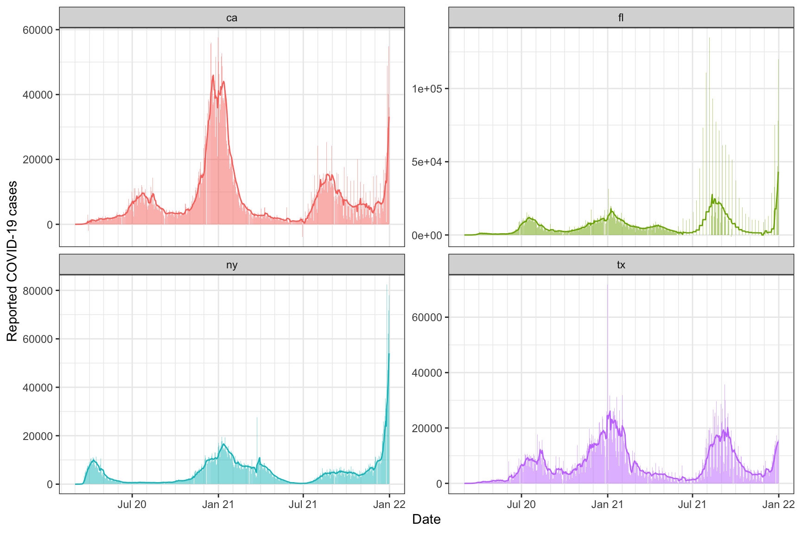
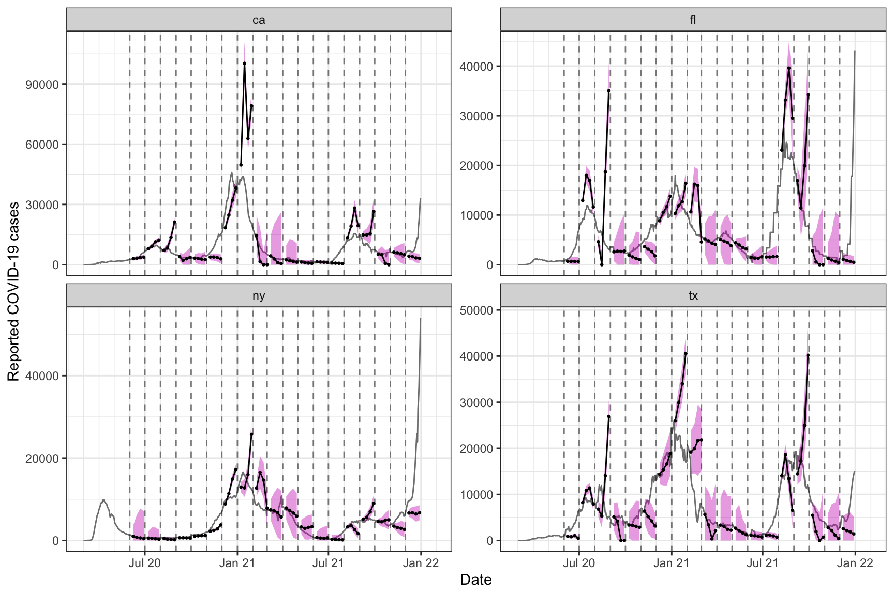

A central tool in the epiprocess package is epi_slide(), which is based on the powerful functionality provided in the slider package. In epiprocess, to “slide” means to apply a computation—represented as a function or formula—over a running window of n time steps. Suitable groupings can always be achieved by a preliminary call to group_by().
By default, the meaning of one time step is inferred from the time_value column of the epi_df object under consideration, based on the way this column understands addition and subtraction. For example, if the time values are coded as Date objects, then one time step is one day, since as.Date("2022-01-01") + 1 equals as.Date("2022-01-02"). Alternatively, the time step can be specified manually in the call to epi_slide(); you can read the documentation for more details. Furthermore, the alignment of the running window used in epi_slide() can be “right”, “center”, or “left”; the default is “right”, and is what we use in this vignette.
As in getting started guide, we’ll fetch daily reported COVID-19 cases from CA, FL, NY, and TX (note: here we’re using new, not cumulative cases) using the covidcast package, and then convert this to epi_df format.
library(covidcast) library(epiprocess) library(dplyr) x <- covidcast_signal(data_source = "jhu-csse", signal = "confirmed_incidence_num", start_day = "2020-03-01", end_day = "2021-12-31", geo_type = "state", geo_values = c("ca", "fl", "ny", "tx")) %>% select(geo_value, time_value, cases = value) %>% arrange(geo_value, time_value) %>% as_epi_df()
We first demonstrate how to apply a 7-day trailing average to the daily cases in order to smooth the signal, by passing in a formula for the first argument of epi_slide(). To do this computation per state, we first call group_by().
## # A tibble: 10 × 4
## geo_value time_value cases slide_value
## <chr> <date> <dbl> <dbl>
## 1 ca 2020-03-01 6 6
## 2 ca 2020-03-02 4 5
## 3 ca 2020-03-03 6 5.33
## 4 ca 2020-03-04 11 6.75
## 5 ca 2020-03-05 10 7.4
## 6 ca 2020-03-06 18 9.17
## 7 ca 2020-03-07 26 11.6
## 8 ca 2020-03-08 19 13.4
## 9 ca 2020-03-09 23 16.1
## 10 ca 2020-03-10 22 18.4The formula specified has access to all columns present in the original epi_df object (and must refer to them with the prefix .x$). As we can see, the function epi_slide() returns an epi_df object with a new column appended that contains the results (from sliding), named slide_value as the default. We can of course change this post hoc, or we can instead specify a new name up front using the new_col_name argument:
x <- x %>% group_by(geo_value) %>% epi_slide(~ mean(.x$cases), n = 7, new_col_name = "cases_7dav") head(x, 10)
## # A tibble: 10 × 4
## geo_value time_value cases cases_7dav
## <chr> <date> <dbl> <dbl>
## 1 ca 2020-03-01 6 6
## 2 ca 2020-03-02 4 5
## 3 ca 2020-03-03 6 5.33
## 4 ca 2020-03-04 11 6.75
## 5 ca 2020-03-05 10 7.4
## 6 ca 2020-03-06 18 9.17
## 7 ca 2020-03-07 26 11.6
## 8 ca 2020-03-08 19 13.4
## 9 ca 2020-03-09 23 16.1
## 10 ca 2020-03-10 22 18.4We can also pass a function for the first argument in epi_slide(). In this case, the passed function must have the following argument structure: x, a data frame with the same column names as the original object; followed by any number of named arguments; and ending with ... to capture additional arguments. Recreating the last example of a 7-day trailing average:
x <- x %>% group_by(geo_value) %>% epi_slide(function(x, ...) mean(x$cases), n = 7, new_col_name = "cases_7dav") head(x, 10)
## # A tibble: 10 × 4
## geo_value time_value cases cases_7dav
## <chr> <date> <dbl> <dbl>
## 1 ca 2020-03-01 6 6
## 2 ca 2020-03-02 4 5
## 3 ca 2020-03-03 6 5.33
## 4 ca 2020-03-04 11 6.75
## 5 ca 2020-03-05 10 7.4
## 6 ca 2020-03-06 18 9.17
## 7 ca 2020-03-07 26 11.6
## 8 ca 2020-03-08 19 13.4
## 9 ca 2020-03-09 23 16.1
## 10 ca 2020-03-10 22 18.4Perhaps the most convenient way to setup a computation in epi_slide() is to pass in an expression for tidy evaluation. In this case, we can simply define the name of the new column directly as part of the expression, setting it equal to a computation in which we can access any columns of x by name, just as we would in a call to dplyr::mutate(), or any of the dplyr verbs. For example:
## # A tibble: 10 × 4
## geo_value time_value cases cases_7dav
## <chr> <date> <dbl> <dbl>
## 1 ca 2020-03-01 6 6
## 2 ca 2020-03-02 4 5
## 3 ca 2020-03-03 6 5.33
## 4 ca 2020-03-04 11 6.75
## 5 ca 2020-03-05 10 7.4
## 6 ca 2020-03-06 18 9.17
## 7 ca 2020-03-07 26 11.6
## 8 ca 2020-03-08 19 13.4
## 9 ca 2020-03-09 23 16.1
## 10 ca 2020-03-10 22 18.4As a simple sanity check, we visualize the 7-day trailing averages computed on top of the original counts:
library(ggplot2) theme_set(theme_bw()) ggplot(x, aes(x = time_value)) + geom_col(aes(y = cases, fill = geo_value), alpha = 0.5, show.legend = FALSE) + geom_line(aes(y = cases_7dav, col = geo_value), show.legend = FALSE) + facet_wrap(~ geo_value, scales = "free_y") + scale_x_date(minor_breaks = "month", date_labels = "%b %y") + labs(x = "Date", y = "Reported COVID-19 cases")

As we can see from the top right panel, it looks like Texas moved to weekly reporting of COVID-19 cases in summer of 2021.
As a more complex example, we create a forecaster based on a local (in time) autoregression or AR model. AR models can be fit in numerous ways (using base R functions and various packages), but here we define it “by hand” both because it provides a more advanced example of sliding a function over an epi_df object, and because it allows us to be a bit more flexible in defining a probabilistic forecaster: one that outputs not just a point prediction, but a notion of uncertainty around this. In particular, our forecaster will output a point prediction along with an 90% uncertainty band, represented by a predictive quantiles at the 5% and 95% levels (lower and upper endpoints of the uncertainty band).
The function defined below, prob_ar(), is our probabilistic AR forecaster. The lagsargument indicates which lags to use in the model, and ahead indicates how far ahead in the future to make forecasts (both are encoded in terms of the units of the time_value column; so, days, in the working epi_df being considered in this vignette).
prob_ar <- function(y, lags = c(0, 7, 14), ahead = 7, min_train_window = 20, lower_level = 0.05, upper_level = 0.95, symmetrize = TRUE, nonneg = TRUE) { # Return NA if insufficient training data if (length(y) < min_train_window + max(lags) + ahead) { return(data.frame(point = NA, lower = NA, upper = NA)) } # Build features and response for the AR model dat <- do.call( data.frame, purrr::map(lags, function(lag) dplyr::lag(y, n = lag)) ) dat$y <- dplyr::lead(y, n = ahead) # Now fit the AR model and make a prediction obj <- lm(y ~ ., data = dat) point <- predict(obj, newdata = tail(dat, 1)) # Compute a band r <- residuals(obj) s <- ifelse(symmetrize, -1, NA) # Should the residuals be symmetrized? q <- quantile(c(r, s * r), probs = c(lower_level, upper_level), na.rm = TRUE) lower <- point + q[1] upper <- point + q[2] # Clip at zero if we need to, then return if (nonneg) { point = max(point, 0) lower = max(lower, 0) upper = max(upper, 0) } return(data.frame(point = point, lower = lower, upper = upper)) }
We go ahead and slide this AR forecaster over the working epi_df of COVID-19 cases. Note that we actually model the cases_7dav column, to operate on the scale of smoothed COVID-19 cases. This is clearly equivalent, up to a constant, to modeling weekly sums of COVID-19 cases.
fc_time_values <- seq(as.Date("2020-06-01"), as.Date("2021-12-01"), by = "2 months") x %>% group_by(geo_value) %>% epi_slide(fc = prob_ar(cases_7dav), n = 120, ref_time_values = fc_time_values) %>% head(10)
## # A tibble: 10 × 7
## geo_value time_value cases cases_7dav fc_point fc_lower fc_upper
## <chr> <date> <dbl> <dbl> <dbl> <dbl> <dbl>
## 1 ca 2020-06-01 2440 2655. 2491. 2137. 2846.
## 2 ca 2020-08-01 8609 8285. 7688. 6491. 8886.
## 3 ca 2020-10-01 3503 3361 4172. 2351. 5993.
## 4 ca 2020-12-01 23565 15714. 17459. 15745. 19172.
## 5 ca 2021-02-01 13123 17972 16705. 7791. 25619.
## 6 ca 2021-04-01 2652 2680. 1979. 0 9249.
## 7 ca 2021-06-01 593 1597. 1662. 1181. 2143.
## 8 ca 2021-08-01 24275 9807. 12499. 11230. 13767.
## 9 ca 2021-10-01 2703 7468. 5709. 3648. 7769.
## 10 ca 2021-12-01 5316 4937. 4746. 3021. 6471.Note that here we have utilized an argument ref_time_values to perform the sliding computation (here, compute a forecast) at a specific subset of reference time values. We get out three columns fc_point, fc_lower, and fc_upper that correspond to the point forecast, and the lower and upper endpoints of the 95% prediction band, respectively. (If instead we had set as_list_col = TRUE in the call to epi_slide(), then we would have gotten a list column fc, where each element of fc is a data frame with named columns point, lower, and upper.)
To finish off, we plot the forecasts at some times (spaced out by a few months) over the last year, at multiple horizons: 7, 14, 21, and 28 days ahead. To do so, we encapsulate the process of generating forecasts into a simple function, so that we can call it a few times.
# Note the use of all_rows = TRUE (so keep all original rows in the output) k_week_ahead <- function(x, ahead = 7) { x %>% group_by(geo_value) %>% epi_slide(fc = prob_ar(cases_7dav, ahead = ahead), n = 120, ref_time_values = fc_time_values, all_rows = TRUE) %>% mutate(target_date = time_value + ahead) } # First generate the forecasts, and bind them together z <- bind_rows(k_week_ahead(x, ahead = 7), k_week_ahead(x, ahead = 14), k_week_ahead(x, ahead = 21), k_week_ahead(x, ahead = 28)) # Now plot them, on top of actual COVID-19 case counts ggplot(z) + geom_line(aes(x = time_value, y = cases_7dav), color = "gray50") + geom_ribbon(aes(x = target_date, ymin = fc_lower, ymax = fc_upper, group = time_value), fill = 6, alpha = 0.4) + geom_line(aes(x = target_date, y = fc_point, group = time_value)) + geom_point(aes(x = target_date, y = fc_point, group = time_value), size = 0.5) + geom_vline(data = tibble(x = fc_time_values), aes(xintercept = x), linetype = 2, alpha = 0.5) + facet_wrap(vars(geo_value), scales = "free_y") + scale_x_date(minor_breaks = "month", date_labels = "%b %y") + labs(x = "Date", y = "Reported COVID-19 cases")

Two points are worth making. First, the AR model’s performance here is pretty spotty. At various points in time, we can see that its forecasts are volatile (its point predictions are all over the place), or overconfident (its bands are too narrow), or both at the same time. This is only meant as a simple demo and not entirely unexpected given the way the AR model is set up. For example, the overconfidence in this example is due to the fact that the bands are based on quantiles of training residuals, so if the AR model fits well to the training set, then these can clearly be too small in magnitude. The epipredict package, which is a companion package to epiprocess, offers a suite of predictive modeling tools that can improve on some of the shortcomings of the above simple AR model.
Second, the AR forecaster here is using finalized data, meaning, it uses the latest versions of signal values (reported COVID-19 cases) available, for both training models and making predictions historically. However, this is not reflective of the provisional nature of the data that it must cope with in a true forecast task. Training and making predictions on finalized data can lead to an overly optimistic sense of accuracy; see, for example, McDonald et al. (2021), and references therein. Fortunately, the epiprocess package provides a data structure called epi_archive that can be used to store all data revisions, and furthermore, an epi_archive object knows how to slide computations in the correct version-aware sense (for the computation at each reference time \(t\), it uses only data that would have been available as of \(t\)). We will revisit this example in the archive vignette.